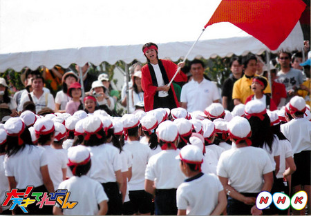

<<2012年10月 | トップページ | 2012年12月>>
2012年11月
【冬を感じたとき】島田太一
ども、おにぎり1号の島田です。
毎年、冬に学校から帰って、遊ぶ時に、
時間が短い＆寒いで、自由にあそべません。
春と夏は7：00ぐらいに暗くなったけど、
冬になると5：00にはすぐ暗くなります。
周りが暗い、ボールを投げても、
どこにいったのかわかりません。
だからキャッチボールなどをして
ボールがどこに来るのかわかんないのでコワイです。
ちなみに、カラーバットにビニールテープをまきつけて
よく飛ぶようにしてます。
（まきすぎるとふりにくくなります）
投稿者:島田太一 | 投稿時間:18時00分 | カテゴリ：We are 大天才テレビジョン | 固定リンク


 " title="ソーシャルブックマークについて">
" title="ソーシャルブックマークについて">
※NHKサイトを離れます。
【冬を感じたとき】延命杏咲実
どーも！寒がりの延命です！
私が冬を感じた時は、たん生日が来た時です。
私のたん生日は11月15日なので、今年もとても寒かったです。
ロウソクをふいたら、私は、「もう冬なのか・・・。」と思います。
私は、冬が一番にが手なので、「春、早くこないかなぁ・・・。」とも思います。
春はポカポカしていて、一番すきです！
でも、やっぱり、たん生日の方がダンゼンすきです！
あ、今年のたん生日ケーキはモンブランでした。
すご～くおいしかったです！！
投稿者:延命杏咲実 | 投稿時間:18時00分 | カテゴリ：We are 大天才テレビジョン | 固定リンク
" title="ソーシャルブックマークについて">
※NHKサイトを離れます。
【乗りすけFile】 No.54：スイーパー（11月28日放送）


全長：1m52cm
全高：1m29cm
全幅：81cm
重量：460kg
工場や駅などの構内で使用される自走式産業用清掃機。ゴミの上を通過する際、車体中央下部のメインブラシがゴミを後部のタンクに掃き込む。タンク容量は80邃刀Aたまったごみの廃棄は手動で行う。
壁際など隅のゴミは、サイドブラシを使ってタンクに掃き込む。ブラシの届かないゴミは、本体に搭載された掃除機で吸い込むことが可能だ。
バッテリー駆動により静音走行を実現。８時間半の充電で３時間駆動する。最高速度は８km/h。
これまでの【乗りすけFile】はこちら
投稿者:大天才テレビジョン社員１号 | 投稿時間:18時42分 | カテゴリ：乗りすけさん | 固定リンク
" title="ソーシャルブックマークについて">
※NHKサイトを離れます。
【冬を感じたとき】寺田朱里
冬を感じる時はね！
息をはぁーって吐くと白い煙がもくもくでる時！！→大天才テレビジョン広報部注：「煙」じゃねーだろ。工場か！！
それから顔をマフラーに埋めこむ時～♪
私はね～！冬が一番好きなの～！！
鼻がさむさでツーンとしたり・・・。
いい空気をしているからっ～！
うふふふふ・・・ん♪
す・て・き～！！
投稿者:寺田朱里 | 投稿時間:18時00分 | カテゴリ：We are 大天才テレビジョン | 固定リンク
" title="ソーシャルブックマークについて">
※NHKサイトを離れます。
【大天才テレビショッピング】～よくばりコップ～
「大天才テレビショッピング」１３回目の放送はご覧いただけたでしょうか。
今回ご紹介したのは、大天才テレビジョン商品開発部が総力を挙げて開発した「よくばりコップ」です。
コップ５杯分の飲み物が滝のように流れる画期的なデザイン。

コップごとに違う飲み物を入れると、味の変化も楽しめます！

※モデル：山田陶子さん
詳細については、 「大天才テレビショッピング」のページ をご覧ください。
どうぞよろしくお願いいたします。
投稿者:大天才テレビジョン社員１号 | 投稿時間:18時45分 | カテゴリ：大天才テレビショッピング | 固定リンク
" title="ソーシャルブックマークについて">
※NHKサイトを離れます。
【冬を感じたとき】竹原司
おひさしぶりです！司です！
もう冬ですね！
あ～っというまに夏から冬になってしまいましたね。
冬を感じたと言えば、僕、カメかってるんですよね～！
そして、そのカメがこちら！
・・・冬眠しています！
もうエサをあげても食べません。
動いたり、食べたりしないので
ちょっと悲しいです。
でもまた来年起きるので、それが楽しみです！
それでは、さよなら～～！！
投稿者:竹原司 | 投稿時間:18時00分 | カテゴリ：We are 大天才テレビジョン | 固定リンク
" title="ソーシャルブックマークについて">
※NHKサイトを離れます。
【運動会の思い出】金子隼也
僕は、去年の運動会で応援団長をやりました。
その前の年にも応援団をやって「応援賞」をとったので２年連続！という思いでやりました。
応援団のメンバーと朝早くから一生懸命練習。
しかし…結果は競技の総合得点も最下位。応援賞も取る事ができませんでした。

でも！
その２週間後にあった地区別運動会。
リレーに長縄と頑張って、なんと八の字跳びでは歴代最高回数の新記録で優勝することができました。
運動会、体育祭、じっとしていられません(笑)
投稿者:金子隼也 | 投稿時間:18時00分 | カテゴリ：We are 大天才テレビジョン | 固定リンク
" title="ソーシャルブックマークについて">
※NHKサイトを離れます。
【５年前の私】岡田結実
大天才テレビジョン広報部注：岡田さんが５年前の写真を持って来たので、みなさんにお目にかけます。本人にはきつく注意しておきました！！
５年前の自分は、さか上がりができなくて、さか上がりの練習ずっとしてました！
あと、同じクラスのみんなより少しせが高くて、しゃべらなかったらせいそなゆうとうせいなかんじなんですけど（＾ー＾）
しゃべったらちょーおバカちゃん！！笑
自分で言っちゃいました。(´∀`)
テヘペロ（**
小さいころは、ゆうとうせいぽかったけど、性格は元気でずっと笑ってた感じです。
まぁ、ゆいの小さいころでしたー。
チャンチャン。
投稿者:岡田結実 | 投稿時間:18時00分 | カテゴリ：We are 大天才テレビジョン | 固定リンク
" title="ソーシャルブックマークについて">
※NHKサイトを離れます。
【乗りすけFile】 No.53：浄水セット（11月21日放送）
全長：7m41cm
全高：3m48cm
全幅：2m48cm
重量：約15t
河川や湖沼など、自然界のあらゆる淡水をろ過し、生活用水・飲料水レベルに浄化する陸上自衛隊の特殊車両。3.5tトラックの荷台に大型の浄水装置を搭載している。正式名称は「浄水セット 逆浸透型」。「逆浸透」とはろ過方法の一種で、水を通すが不純物は通さない特殊な膜を利用するろ過法である。
3名の隊員により約50分で荷台から浄水装置を展開。三段階のろ過システムにより、小さなごみやウイルスなど有害成分を完全に除去する。1日あたり約70tを浄水可能。成人が1日に最低限必要とする水がおよそ2.5リットルなので、1台で1日に2万8000人を支援可能。東日本大震災など、主に災害の現場で活躍している。
これまでの【乗りすけFile】はこちら
投稿者:大天才テレビジョン社員１号 | 投稿時間:18時42分 | カテゴリ：乗りすけさん | 固定リンク
" title="ソーシャルブックマークについて">
※NHKサイトを離れます。
【写真フォルダ一挙整理】白い人たち２
というわけで昨日の続き。
白い人たちの写真集です。
不意打ちされた金子
謎のポーズをとるニイナ
浅賀くん（…なんか思い浮かばない）
カメラに近寄る朱里
中途半端な顔を作る寿々歌
白い人たちの渋滞
そして某ゲームのキャラクターのようなボス！
それでは、さようなら！！
投稿者:大天才テレビジョン社員２号 | 投稿時間:18時00分 | カテゴリ：お知らせ！ | 固定リンク
" title="ソーシャルブックマークについて">
※NHKサイトを離れます。
【てれび戦士育成計画】金子画伯の上達
皆さん、こんにちは！大天才テレビジョン 広報のもっちーです♪
今日のてれび戦士育成計画「似顔絵を描く」はご覧いただけましたか？
金子隼也画伯の描いた似顔絵が、あまりにも衝撃的だったので、ここで公開しちゃいますヾ(oﾟｘﾟo)ﾉｼ
◆１枚目◆出川特命Ｐ

◆２枚目◆鈴木ＡＰ
◆３枚目◆(ふたたび)出川特命Ｐ
並べてみると、コーナーの中でかなり上達したことが分かります！ね！！


ちなみに似顔絵の達人・ユキンコアキラさんによると、似顔絵を描くポイントは以下の５つ！
①最初に大まかな顔の大きさを決める
②描き込む順番：髪→顔型→口・鼻→目→まゆ毛 の順番で描き込む
③顔のパーツ：バランスが重要！
④パーツ（口・鼻・目・まゆ毛）の描き方：影を意識して描き込む
⑤目の描き方：上まぶたは濃く、下まぶたは薄く描き込む。瞳は線で描き込む
金子画伯の画力を劇的アップさせた達人のコツ、皆さんも是非試してみてくださいね～！
投稿者:もっちー＠大天才テレビジョン広報室 | 投稿時間:18時54分 | カテゴリ：お知らせ！ | 固定リンク
" title="ソーシャルブックマークについて">
※NHKサイトを離れます。
【写真フォルダ一挙整理】白い人たち
ある日の収録
白い人たちが大量にいるという情報を聞きつけ、早速現地に向かい激写してきました。

あごを押さえる延命ちゃん
目つきの悪い竹原

謎の瓶を持つ黒澤

髪の毛がすっきりした陶子さん

うつむく島田
演歌歌手のようなソーズビー
手だけがでかく写った結実
というわけで、つづきは明日！！！！
投稿者:大天才テレビジョン社員２号 | 投稿時間:18時00分 | カテゴリ：お知らせ！ | 固定リンク
" title="ソーシャルブックマークについて">
※NHKサイトを離れます。
【ドウブツカメラ！】「動物の笑顔」（撮影：ソーズビー・陶子さん）
１１月１９日（月）「動物の笑顔」
今回の動物カメラマンは、ソーズビー航洋と山田陶子。
２人が撮ったベストショットはこちら！
※画像をクリックすると大きな画像が開きます。
また、開いた画像を右クリックすると保存ができます。
犬の笑顔 撮影：山田陶子『と～う～こ～さぁ～ん♪』

猫の笑顔 撮影：ソーズビー航洋『にゃ。』

ラクダの笑顔 撮影：ソーズビー航洋『あーあはははははははは!! 』

フクロウの笑顔 撮影：山田陶子『ほっこり～♪』

ロケ中のオフショットはこちら！
投稿者:大天才テレビジョン社員３号 | 投稿時間:18時45分 | カテゴリ：ドウブツカメラ！ | 固定リンク
" title="ソーシャルブックマークについて">
※NHKサイトを離れます。
【５年前の私】長谷川ニイナ
ハロー★ニイナでーす！
あれから何年たちましたっけ・・・。５年前ですかねぇ。
５年前の私は、２年生！！
おぉ！！５年前ってもうそんなに前かぁって・・・ちょっとびっくりです。
でも正直、身長は変わったけど、性格はあまり変わっていないような気がします！
でも、５年前の自分と比べたら、物事を見る目が変わったような感じが・・・！
そう！考える事とか！今日のご飯とか・・・！
あと、５年前はバナナとかグレープフルーツがきらいだったけど、今は本当に大好き！！！
そういうのは、けっこうコロコロ変わります！
それにしても、なつかしい～（＾０＾）
あの頃に戻りたいなぁという事もあるけど、今の方がいいなぁって事もあって、アルバム見てるだけでいろいろ考えるので楽しいでーす！
ついつい時間がたってしまう！
５年後の私はどうなるのかな～！
５年後も、こんな事言っているのかな～！イヒヒッ！
（写真は友達と動物園に行った時の写真でーす！！
私変わっていますか～！？）
投稿者:長谷川ニイナ | 投稿時間:18時00分 | カテゴリ：We are 大天才テレビジョン | 固定リンク
" title="ソーシャルブックマークについて">
※NHKサイトを離れます。
【てれび戦士プロデュース室】「公共電波にのっかって」ライブバージョン
あ、そうそう。
先日行われた「NHK文化祭2012」のときのてれびちゃん「公共電波にのっかって」ライブ映像を公開中。
こちらのアドレス→ http://www.nhk.or.jp/tvkun/nenkan/index.html です！！

そして、こちらてれびちゃんのイラスト。
岡山県倉敷市の小野茉由佳さん、ありがとうございました！
イラストなども随時ご紹介していきますね。
投稿者:大天才テレビジョン社員１号 | 投稿時間:14時30分 | カテゴリ：てれび戦士プロデュース室 | 固定リンク
" title="ソーシャルブックマークについて">
※NHKサイトを離れます。
【５年前の私】山田陶子
どうも、山田です。
５年前は、幼稚園年長さんですね。
年少・年中さんと、毎朝、下駄箱で泣いてる子だったのです・・・。
いっぱい人がいる幼稚園が、嫌いだったのです・・・。
年長さんで、一人、うんていにはまったのです。
逆上がりにもはまったのです。
竹馬にもはまったのです。
ブランコのてっぺんまで登れるのです。
側転もできるのです・・・。
気が付いたら、元気な女の子って言われるようになっていたのです。
調子に乗って、お誕生会とかしてみたのです。
そんなに楽しくなかったのです・・・。
それから、誕生日は・・・
身内とか・・・
当日暇な・・・
偶然来れる・・・
近所の人とか・・・
少人数でケーキを食べる会をしている気がするのです・・・。
山田でした・・・。
ガオ！
投稿者:山田陶子 | 投稿時間:18時00分 | カテゴリ：We are 大天才テレビジョン | 固定リンク
" title="ソーシャルブックマークについて">
※NHKサイトを離れます。
【おまけ】NHK文化祭のてれびちゃんたち

先日の「NHK文化祭2012」、たくさんの人にお越し頂きありがとうございました！
これはステージ出演前のてれびちゃん３人。真剣に台本を読んでます。
「激闘！カテゴリング」の新ゲームもお楽しみに！
投稿者:大天才テレビジョン社員１号 | 投稿時間:18時20分 | カテゴリ：てれび戦士プロデュース室 | 固定リンク
" title="ソーシャルブックマークについて">
※NHKサイトを離れます。
【５年前の私】ソーズビー航洋
Koyoです！
５年前は・・・。１年生です★
当時はよく友達と第２音楽室に勝ってに入って、楽器で遊んだり、おにごっこしたりしました♪ｗｗ
あぁ！！あと生活か室にも勝ってに入って、ふうせんとかフラフープとかで遊んでました。ｗ
で、ある日・・・先生が来たんです。それも声デカくてこわい！
だからすててある黒板のうらでかくれてたら・・・気付かなかったんです！
心ぞうが死にそうなくらいバックンバックンしてたけど、先生が出たあとちょーよろこびました！！
２年生までいっさいバレズ、同じフロアだったんで２年間同じことしてました。ｗｗ
性格は・・・。
当時から図工のみ得意で。ｗｗ
わすれものは１日３個以上。ｗｗ（今は大丈夫！）
先生にはんこう的なたいどもｗｗ
だから学校公開の日も立たされましたｗｗ（今はぜんぜんNO!）
字も汚いｗｗ（今もｗ）
毎日×２ケンカｗｗ（今はまいにちなかよし”おとズビち”でーす♪）
最終的にはダメダメでしたｗｗ
でもあのころはわすれられない年でした～ｗｗ♪
あのころに・・・もどりたいｗｗ
※よい子はマネしないで下さい。
Koyo.S
投稿者:ソーズビー航洋 | 投稿時間:18時00分 | カテゴリ：We are 大天才テレビジョン | 固定リンク
" title="ソーシャルブックマークについて">
※NHKサイトを離れます。
【乗りすけFile】 No.52：油圧ショベル（１１月１４日放送）
全長：9m43cm
全高：3m04cm
全幅：2m80cm
重量：約20t
価格：約2000万円
油圧ショベルは、一般的には「ショベルカー」の名称で知られる自走建設機械。アーム先端に取り付けられた大型バケットで、大量の土や石を掘削・運搬する。
バケットには重さ約1.2tまで積載可能。操縦席は四方ガラス張りで、後方を見るためのカメラも装備しており、360度の視界を確保している。動力はほとんどのものがディーゼルエンジン。エンジンの動力をポンプで油圧力に変換し、アーム操作と旋回を行う。走行は不整地に適したクローラで行い、最大35°の登坂能力を持つ。
アームには、バケット以外にも様々なアタッチメントが装着可能。木材の運搬や、石の粉砕、草刈りなど多様な作業を行うことができる。
これまでの【乗りすけFile】はこちら
投稿者:大天才テレビジョン社員１号 | 投稿時間:18時42分 | カテゴリ：乗りすけさん | 固定リンク
" title="ソーシャルブックマークについて">
※NHKサイトを離れます。
【大天才テレビショッピング】～ほかほか冷え冷えベストロー～
「大天才テレビショッピング」１２回目の放送はご覧いただけたでしょうか。
今回ご紹介したのは、大天才テレビジョン商品開発部が総力を挙げて開発した「ほかほか冷え冷えベストロー」です。
ビジネスマン必携！オールシーズン対応アイテム。
飲み物の入ったペットボトルを取り付け、首元のストローから飲むと
暑さ寒さだけではなく、のどの渇きも癒せちゃう！
※モデル：島田太一さん
詳細については、 「大天才テレビショッピング」のページ をご覧ください。
どうぞよろしくお願いいたします。
投稿者:大天才テレビジョン社員３号 | 投稿時間:18時47分 | カテゴリ：大天才テレビショッピング | 固定リンク
" title="ソーシャルブックマークについて">
※NHKサイトを離れます。
【５年前の私】浅賀玲音
どうも！れおです。
五年前の自分はこんな感じでした！

まだ若かりしあの頃...(T_T)
この時はまだ歯っ欠け坊主で今より太ってて顔も丸々してましたねぇ
この写真も某夢の国での写真なのですが、
今もこの時もこの夢の国が大好きでした！
地元っていうのもあって親にはけっこう連れて行ってもらっていました！
そのおかげなのか、今も昔もファンタジー人間です。
今と違うところは、やっぱり外見かな？？
老けました！！＼(^o^)／
でも中身はまだまだあの頃とそう変わっていない気がします！
昔のこと思い出すのって楽しいですね！
また今度思い出してみよー！
ではでは！
投稿者:浅賀玲音 | 投稿時間:18時00分 | カテゴリ：We are 大天才テレビジョン | 固定リンク
" title="ソーシャルブックマークについて">
※NHKサイトを離れます。
【運動会の思い出】岡田結実
運動会では
いろんな思い出があります(^^)
応援団の副団長と
旗を務めさしてもらいました(*^_^*)
旗は重くて
毎日練習だったから
筋肉痛になって腕の筋肉が
そん時は結構ありました^^;
でも自分の中で
1番運動会の思い出と言うのは
かけっこで1位か2位かを争いながら走ってたらゴール前で転んで足をすりむいてすぐたって
走り出したけど
結局4位でした( T_T)
それで号泣でしたね^^;
友達にいっぱい慰めてもらいました(^^)w
自分のクラスのかけっこでの
ビリはゆいだけでした…
という
悲しい悲しい思い出が…w
でもその後組体操では
頑張って綺麗な演技を六年生みんなで
魅せれました(^-^)/
まぁー
良くも悪くもこれがゆいの運動会での
思い出でした( ´ ▽ ` )ノ
泣いててやっとおさまったときに
ままに取られた写真です(^^)
泣いてたから笑顔がないw
投稿者:岡田結実 | 投稿時間:18時00分 | カテゴリ：We are 大天才テレビジョン | 固定リンク
" title="ソーシャルブックマークについて">
※NHKサイトを離れます。
【５年前の私】延命杏咲実
画面さくらちゃんによくにていると言われる延命です。
さて、５年前の私はなんと、年少さんです！
よくないていました。
ようち園でもいつもないていました。
写真もなきおえた写真です。
目がはれてる（笑）
今もよくなくけど、ぜんぜんよくなった方です（笑）
今とちがう所は、身長とかみの長さだけです（笑）
よ～くよ～く考えても、今とほとんどかわってません。
身長は５年前は１ｍもなかったのに、今は１３０ｃｍで３０ｃｍい上のびました！
５年前はショートカットだったけど、今はかみが長くなりました。
今のかみがたもいいけど、ショートカットもいいなぁ～。
投稿者:延命杏咲実 | 投稿時間:18時00分 | カテゴリ：We are 大天才テレビジョン | 固定リンク
" title="ソーシャルブックマークについて">
※NHKサイトを離れます。
【５年前の私】島田太一
んと、5年前はぁ、小学２年生なんでぇ２年のころは運動神経が良かったです。
スッゲー友達と公園で遊んだり、リレーで補欠でした。
あとぉ・・・バレンタインにチョコをもらいました！
けど、書いてあった名前は、島田じゃなくて鳥田って書いてありました。（T・T）
どーでも良いですが、写真は、大人の歯が生えたてのころです。
投稿者:島田太一 | 投稿時間:18時00分 | カテゴリ：We are 大天才テレビジョン | 固定リンク
" title="ソーシャルブックマークについて">
※NHKサイトを離れます。
【５年前の私】黒澤美澪奈
こんにちは！ みれなで～す(^0^)/
５年前の私は、幼稚園の年長さんでした。
幼稚園生の頃は、愛知に住んでいたんです(^^)
愛知の友達、みんな元気かな～？
私は、ちっちゃな頃から人見知りしない子だったので、お友達いっぱ～いで毎日楽しかったです(≧∇≦)
特に幼稚園が大好きで、風邪をひいて熱を出しても、幼稚園に行きたくてしょうがなかったです！
大好きな幼稚園から帰ってくると、『水泳』や『バレエ』に夢中になっていました。
何かを始めると、夢中になってしまうのは、今も変わんないな～と思います。
↑幼稚園での写真です！みんな前をちゃんと向いてるね。笑
そして…
↑バレエの発表会の時の写真です。
幼稚園生もみんな舞台メイクしました～♪
この頃は、髪を伸ばしていたけど、小学生になってからはショートヘアにしてたので、とっても懐かしいです(^-^)
今は、またちょこっと伸ばしていま～す。
投稿者:黒澤美澪奈 | 投稿時間:18時00分 | カテゴリ：We are 大天才テレビジョン | 固定リンク
" title="ソーシャルブックマークについて">
※NHKサイトを離れます。
【５年前の私】長江崚行
昔の僕は、知らない人とは全く話せない子でした。
いわゆる人見知り。ってやつですね。
今はマシになって、とてもとても明るい子になりました。
自分で言えるほど、変われたと思っています。ええ。(笑)
写真はなぜか泣いてます。
懐かしいです。
bye！⊂(^_^)⊃
RYO-KI
投稿者:長江崚行 | 投稿時間:18時00分 | カテゴリ：We are 大天才テレビジョン | 固定リンク
" title="ソーシャルブックマークについて">
※NHKサイトを離れます。
【５年前の私】鎮西寿々歌
若いのぉ～
おばあちゃんかっ！笑
この写真は、もしかしたら4年前かもしれませんが。笑
モデルのお仕事をしていましたー♪
幼い頃から
よく、鏡の前でポーズをとったり、踊って歌ったりすることが大好きだった私。
この時も、
沢山の洋服を着てポーズをとるのがめっちゃ楽しかったと思っていたのを、覚えています♪
でも、緊張してるのがちょっと伝わってきますねー笑
あー。懐かしい…
戻りたいのぉ～
投稿者:鎮西寿々歌 | 投稿時間:18時00分 | カテゴリ：We are 大天才テレビジョン | 固定リンク
" title="ソーシャルブックマークについて">
※NHKサイトを離れます。
「ＮＨＫ文化祭2012」 あしたもやります！
みなさんこんにちは！
きょうは「NHK文化祭2012」が東京・渋谷のNHK放送センターで開催されました。
少し肌寒かったですが、たくさんの方にお越しいただきありがとうございました！

野外大ステージで行われた「大！天才てれびくん」のスペシャルステージでは「激闘！カテゴリング」の新ゲームも登場。
さらにてれびちゃん「公共電波にのっかって」のミニライブもありました。
「NHK文化祭2012」はあしたも開催！
「大！天才てれびくん」のほかにも色んなイベントが行われているので、ぜひ足を運んでみて下さいね。
詳しくは「ＮＨＫ文化祭2012」ホームページまで！
※「大！天才てれびくん」スペシャルステージは、あす午後４時１０分～４５分です
投稿者:大天才テレビジョン社員１号 | 投稿時間:18時45分 | カテゴリ：お知らせ！ | 固定リンク
" title="ソーシャルブックマークについて">
※NHKサイトを離れます。
【５年前の私】竹原司
５年前の自分・・・・・・年長さんですね。
その時はなんと、すごくガリガリでした。
本当の本当の本当にガリガリでした。なのにな～。
今は太ってしまって変わってしまいました。
だけど一つだけぜんぜん変わっていない事があるんです！
それは・・・・・・
小さいころから変なポーズをして写真に写ったり人を楽しませたりする事です。
この写真は「はぁぁぁぁぁ～」となにやら手からビームを出そうとしているし、
次の写真はブロッコリーをくわえてたこみたいにしています。
やっぱり僕は変わってないですね～。
ということで、さようなら～！！
投稿者:竹原司 | 投稿時間:18時00分 | カテゴリ：We are 大天才テレビジョン | 固定リンク
" title="ソーシャルブックマークについて">
※NHKサイトを離れます。
【５年前の私】寺田朱里
こんばんわーぁあぁー！
今日は５年前の私を紹介いたしやしょうー！
昔はよく博物館に行ってた気がするー！
それで展示物を見て見てじっくりみて・・・。
写真を撮る時は必ず無邪気なポーズだったよ！ふふ。
静かな所で静かにさわぐのが好きだったの！
でも５年前は見た目がすごく大人びていたから、その分気持は子供でいよう！としていたら結果こうなっちゃったわー！
いやーね！
昔の方が性格落ち着いてたもん！多分！
いやー昔は相当人見知りだったなぁー。ネガティブだったの！
でもいまは大丈夫！！OKよー。
でも！髪が長めなのは変わらない！ふふふー！！
とにかく！今が一番幸せよーーー！wao！
投稿者:寺田朱里 | 投稿時間:18時00分 | カテゴリ：We are 大天才テレビジョン | 固定リンク
" title="ソーシャルブックマークについて">
※NHKサイトを離れます。
ページの一番上へ▲